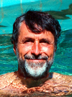

|
 |
ACM Fellow Profile
http://www.csl.sri.com/neumann |
 |
Peter G. Neumann is Principal Scientist at SRI International's Computer Science Laboratory. He's concerned with computer systems and networks, trustworthiness and dependability, high assurance, security, reliability, survivability, safety, and many risks-related issues such as voting-system integrity, crypto policy, social implications and human needs including privacy.
Dr. Neumann created ACM SIGSOFT's Software Engineering Notes (SEN) in 1976 and was its editor for 19 years. He is known to many as the moderator of the ACM Risks Forum; he also edits Communications of the ACM's Inside Risks column, and chairs the ACM Committee on Computers and Public Policy and the National Committee for Voting Integrity.
Neumann has participated in four studies for the National Academies of Science. He's a Fellow of the ACM, IEEE, and AAAS, is an SRI Fellow, co-founded People For Internet Responsibility (PFIR), and has taught courses at Darmstadt, Stanford, U.C. Berkeley, and the University of Maryland.
Neumann was interviewed for this profile by Robert P. Schaefer in March, 2007.
Q: Could you elaborate on the work that led up to your achieving the distinction of ACM Fellow?
Neumann: The citation was "in recognition of outstanding technical and professional achievements in the field of information technology." This was in 1994, the first year of the Fellows program, in which 133 ACM Fellows were selected. I presume the committee could not afford to spend a lot of time on carefully crafted statements for each of us, and chose a rather inclusive generic statement for me. I had already been active in computer R&D since 1953, an ACM member since 1956, involved in SIGSOFT since its creation in 1976, and creator of the ACM Risks Forum in 1985. Perhaps different activities appealed to different selectors.
Who, and what events have been the greatest influences on your life and work?
My website, http://www.csl.sri.com/neumann, enumerates many inspirational colleagues and mentors, and a wonderful lengthy 1952 discussion with Albert Einstein on complexity that in several ways stimulated my subsequent research. My eight years at Harvard, two years on a Fulbright in Germany, and ten years at Bell Labs in Murray Hill were clearly all very formative, especially the five Multics years at Bell Labs (working with Ken Thompson, Doug McIlroy, and Bob Morris, among others) and MIT (F.J. Corbató), Ted Glaser, Jerry Saltzer, and Bob Daley). My colleagues in the SRI Computer Science Lab (since 1971) have been wonderful as well. In addition, the RISKS-related efforts have clearly helped motivate my research.
You've been a contributor to all 32 volumes of SEN. That's quite an accomplishment. Can you give us your thoughts on the value of SEN for the typical reader?
I'm not sure there is a "typical" reader, or if there ever was one. SEN has always sought to reach a rather diverse audience, crossing boundaries among different disciplines. Now that current and back issues are increasingly online (thanks to Will Tracz), that audience can expand even further. I think SEN's informality, relatively short publication fuse, works in progress, practical sense, and good editorship all contribute to its usefulness.
You are the editor of the ACM Risks Forum (http://www.risks.org and http://catless.ncl.ac.uk/Risks), author of the book Computer-Related Risks, and have documented many relevant risks over the years. What is your all-time favorite Computer-Related Risk?
That's a tough call, because the space is so multidimensional. There is no one favorite that stands out. What is most relevant is perhaps that the same kinds of failures and risks keep recurring. From a pedagogic point of view, I like the cases of distributed system propagations exemplified by the ARPANET collapse of 1980, the AT&T collapse of 1990, and a series of propagating power outages. These and many other incidents should make us wonder about the quality of professional programming practice. One recent example involved the computer crashes when a group of new F-22 airplanes crossed the 180-degree longitude for the first time, resulting in a major loss of navigability. I'm also much concerned about the general overreliance on inappropriate applications of technology, as in the rush to all-electronic election systems. But I try to avoid picking one favorite risk, when it is the ongoing totality of riskfulness that is most salient. (My 2006 IEEE ACSAC paper, Risks of Untrustworthiness (http://www.csl.sri.com/neumann/acsac06.pdf), provides a retrospective consideration of some classes of risks rather than just specific risks.)
Can you identify five of the most important publications that you have authored that you feel should be required reading for software engineers and computer scientists?
- The Role of Motherhood in the Pop Art of System Programming, ACM Second Symposium on Operating Systems Principles, Gatlinburg TN, October 1969. This paper is somewhat dated, but may be historically interesting.
- PSOS: Provably Secure Operating System, 1980, and the 2003 IEEE ACSAC Classic paper revisiting it: http://www.csl.sri.com/neumann/acsac03.pdf. PSOS represents the formally specified design of a strongly-typed composable system.
- Computer-Related Risks, Addison-Wesley and ACM Press, 1995. This book is still highly relevant, despite its age.
- Principled Assuredly Trustworthy Composable Architectures, final report for DARPA, 28 December 2004: http://www.csl.sri.com/neumann/chats4.html for browsing, also .pdf and .ps.
- Holistic Systems, SIGSOFT SEN vol. 31, no. 6, pages 4-5, November 2006. (See the online SEN archive and also http://www.csl.sri.com/neumann/holistic.pdf.)
What advice do you have for today's computer science/software engineering students?
See the big picture. If you are interested in solving small problems, consider how they fit into solving bigger problems. If you are interested in solving big problems, be sure you can predictably compose those solutions out of smaller solutions, analyzing the compositions iteratively in terms of properties of the constituent subsystems.
What pressing problems do you see are facing software engineers today?
- Developing system architectures and software engineering disciplines that enable predictable composability of trustworthy systems.
- Learning not just about how to program widgets, but also about what you might have to do to make a system assuredly secure, reliable, safe, and survivable in the face of malfunctions, misuse, and other problems.
- Making formal methods an integral part of curricula, training, and certain aspects of system development.
Do you think licensing software engineers is a viable way to force software engineers to keep current in the latest theories of software engineering and computer science?
Not really. The best places to start involve better educational programs that address theory and practice of developing complex systems, developing incentives for long-term total-system optimization, and penalizing flagrant abuses. Licensing might make sense if there were established metrics for good practice, but I am very suspicious of exam processes that try to reduce competence to the ability to answer simplistic questions.
Given your position to be able to take a long view of history, do you think things are getting better, worse, or staying the same in regards to computer-related risks and software development processes?
Software development is slowly improving, although it is basically still an art form that is far from being an engineering discipline. However, relative to our increased dependence on computers and communications (especially for life-critical and other vital applications), pervasive persistence of prevailing types of system vulnerabilities, increased sophistication of well-motivated threats, overdependence on skilled and omnipresent system administration, and consequential damages, I think the risks are increasing rather than decreasing.
From reading articles and your bio on your website, I see that you are a member of the U.S. Government Accountability Office Executive Council on Information Management and Technology. From this I infer that over the years you've had a close working relationship with the U.S. Government on the issue of computer-related risks. What is the most difficult issue for members of our government to understand about computer-related risks?
Complexity. Unless someone has been burned by system failures, he or she is not likely to understand the difficulties of designing, implementing, operating, maintaining, procuring, and specifying systems that must satisfy critical requirements. People tend to oversimplify anything that seems too complex to understand, with many ensuing risks.
Can you identify any "root causes" or repeating problems in software project development that are (or have been) particularly hard to eradicate?
Why do we still have buffer overflows and unchecked variables? Why do we still have operating systems that cannot protect themselves against themselves, and are therefore susceptible to malware? Why do we continue to build systems that fall apart by themselves, sometimes even without any users? Why do we keep hearing about massive development failures (e.g., the IRS and Air Traffic Control modernizations), with multibillion-dollar expenditures? Many of the root causes were understood in the 1960s. Speaking of root causes, why do we build systems with overly powerful root privileges?
My belief (and fear) is that it would take a Super-Human Organization filled with Super-Human Software Engineers to design and build anything that is Complex, yet perfectly Reliable, Maintainable, Safe, and Secure. That is, that there is an unbridgable gap between what society needs and wants, and what practicing software engineers are capable of doing to fill those needs on time and in budget. Do you think that an average organization filled with average computer programmers has a chance?
For Super-Complex Super-Critical Systems, the chances are very slim -- unless there are carefully crafted sound requirements, sound and well understood fundamental principles, sound overall system architectures that are inherently capable of satisfying those requirements, disciplined development, predictably trustworthy composability, sensible human interfaces, and rigidly enforced formally based software engineering disciplines with sound development tools that are consistently used. And that is just for starters.
Are there any organizations or activities the average software engineer and computer science student can join to become more involved to help make the public more aware of and perhaps reduce computer-related risks?
Read and contribute to the ACM Risks Forum, or at least read the edited highlights from it in SEN. Please read my Holistic Systems two-pager in the November 2006 issue of SEN. I really believe that viewing systems holistically is the only viable way of the future. However, I hope that reaction to that article is not merely a paraphrase of something Butler Lampson once said about capability-based system architecture: it is the way of the future, and always will be.
You lead a very active professional life. What do you do for relaxation?
Playing duos, trios, quartets, quintets, and instrumental groups, with my wife and others; tai chi and exercise; holistic health.What question did I not ask, but should have?
Q. Am I going to write another RISKS book or do a second edition?
A. No. Everything recent is accessible online now, the 1995 book is still almost completely relevant today, and I keep writing more papers, hoping that people will read them. See my website and the RISKS site for more.
Q. Why do you keep using the middle initial "G"?
A. Dr. Peter M. Neumann is an Oxford professor of mathematics, whom I first met in 1962. Dr. Peter J. Neumann is director of the center for Evaluation of Value and Risk in Health at Tufts and Harvard. A photographic artist in NYC and an organist/conductor in Germany also have the same first and last names, although they both evidently eschew any middle initial. In that I am involved in mathematics, health, art, and music, it seems that a little disambiguation might go a long way.
Thank you, Peter, for talking to us.
Robert, you are most welcome. Thanks for asking.